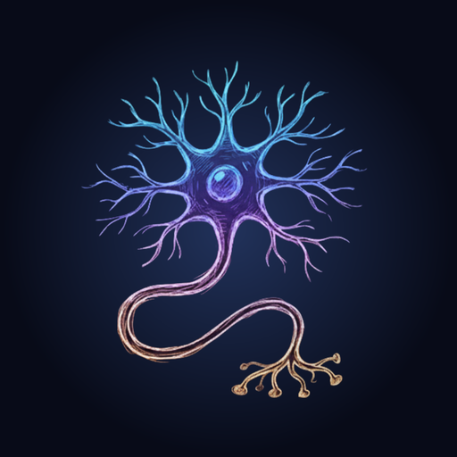
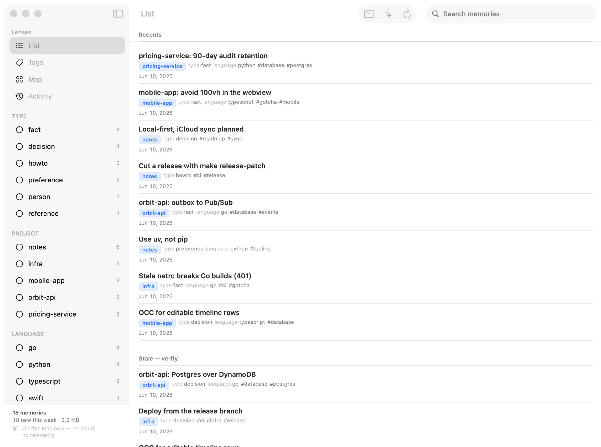

Engram
Memory for Claude Code.
Download for macOSRequires Apple silicon · auto-updates built in · source on GitHub

Local-first, no account
Your memories live in a single SQLite file on your Mac — no sign-up, nothing to log into. Private and under your control.
Hooks into Claude Code
A CLI and a session hook let Claude store and recall what matters as you work.
Hybrid recall
Lexical + semantic search fused together, so the right memory surfaces at the right time.